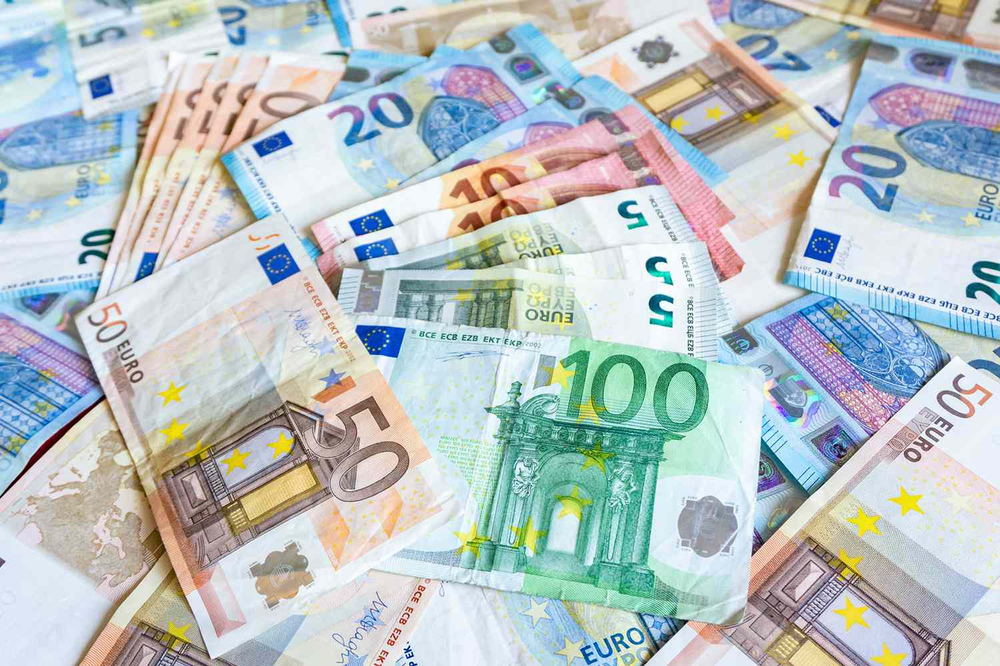
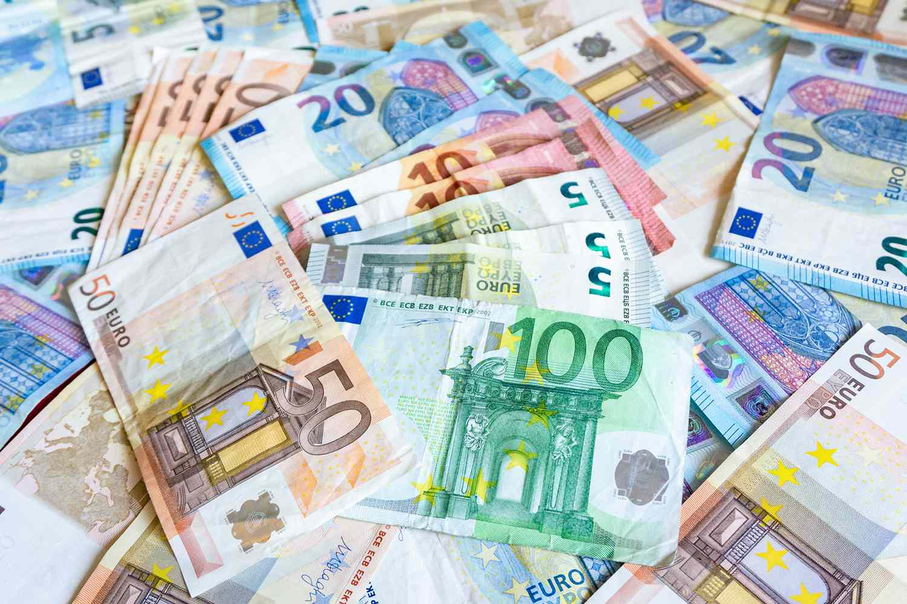

Prvý štátny útvar Slovanov na území dnešného Slovenska bola Samova ríša (7. storočie), neskôr Nitrianske kniežatstvo (začiatok 9. storočia), ktorého spojením s Moravským kniežatstvom vznikla v roku 833 Veľká Morava.
Od polovice 10. do konca 11. storočia sa územie Slovenska postupne začlenilo do Uhorska, ktoré sa v roku 1526 stalo súčasťou habsburskej monarchie, od roku 1867 nazývanej Rakúsko-Uhorsko.
Po rozpade Rakúsko-Uhorska v roku 1918 bolo Slovensko súčasťou Česko-Slovenska až do roku 1993 (okrem obdobia vojnovej Slovenskej republiky). Dňa 1. januára 1993 vznikla zánikom Česko-Slovenska samostatná Slovenská republika.

Od 1. mája 2004 je Slovensko členom Európskej únie, od 21. decembra 2007 je členom Schengenského priestoru. Od 1. januára 2009 je 16. členom Eurozóny, oficiálnou menou sa stalo euro.

Od polovice 10. do konca 11. storočia sa územie Slovenska postupne začlenilo do Uhorska, ktoré sa v roku 1526 stalo súčasťou habsburskej monarchie, od roku 1867 nazývanej Rakúsko-Uhorsko.
Po rozpade Rakúsko-Uhorska v roku 1918 bolo Slovensko súčasťou Česko-Slovenska až do roku 1993 (okrem obdobia vojnovej Slovenskej republiky). Dňa 1. januára 1993 vznikla zánikom Česko-Slovenska samostatná Slovenská republika.
Od 1. mája 2004 je Slovensko členom Európskej únie, od 21. decembra 2007 je členom Schengenského priestoru. Od 1. januára 2009 je 16. členom Eurozóny, oficiálnou menou sa stalo euro.
